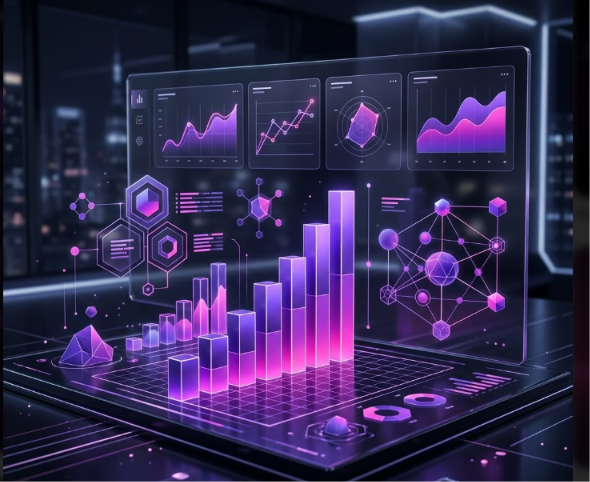
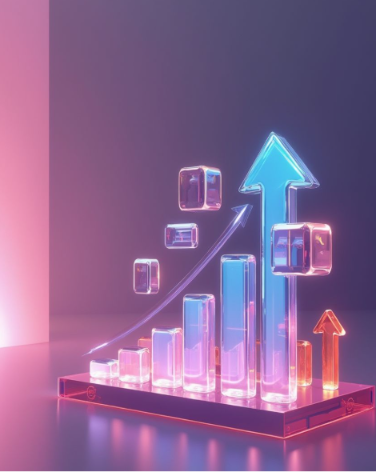

I design and build data platforms, analytics systems and AI solutions that turn fragmented data and business problems into scalable, decision-ready intelligence.
Not just dashboards. I design and deliver complete data systems — from raw ingestion to intelligent decision-making.
Scalable pipelines, ETL/ELT workflows, Medallion Lakehouse architecture and data platforms built from scratch — handling millions of records with automated quality checks.
Modern Microsoft data solutions end-to-end: OneLake ingestion, Dataflows, Lakehouse, semantic modelling, and Power BI reporting — designed for governed, scalable enterprise use.
Executive dashboards, KPI systems, demand forecasting and operational analytics that turn fragmented operational data into clear, actionable business insight — across supply chain, logistics, pharma and FMCG.
RAG applications, LLM-powered internal tools, AI copilots and agentic workflows grounded in enterprise data — connecting business knowledge to intelligent, queryable AI systems.
Clarity, precision, and aesthetic — the benchmark I bring to every dashboard, pipeline, and AI solution I build for clients and stakeholders.

I can own a data or AI project from an unclear brief through to a working, maintained solution — no hand-holding required at each step.
Real business problems, real architectures, real outcomes. Click any project to see the full case study.
Built an AI-agent data layer connecting enterprise PostgreSQL databases to vector search and LLMs — enabling AI agents to query production data through natural language with governed, schema-aware access.
Medallion Lakehouse combining logistics data ingestion, PySpark validation, and LLM-based analysis to automatically identify shipment delay root causes — surfaced through Power BI for operations teams.
End-to-end freight intelligence platform tracking route efficiency, delivery SLAs, carrier performance, and cost-per-shipment KPIs — giving operations and finance a single real-time view of logistics health.
Built Gerry's data function from zero: ETL pipelines, data warehouse, Power BI reporting, cold-chain IoT integration, and a team of 3–4 analysts — eliminating a 2-day manual reporting cycle.
Built a national inventory, WIP, lead-time and supplier KPI system on SAP S/4HANA — consolidating multi-facility planning data into Power BI analytics that drove measurable cost and time reductions.
Benchmarked SARIMA, ARIMA and Holt-Winters models against 12 years of national petrol price data — achieving 3.17% training MAPE and a 4–6 week forward cost outlook for procurement planning.
Recognise your situation? This is exactly the kind of work I do.
"Our reporting is still manual and takes days."
→ I automate the full data pipeline and reporting workflow — daily reports in minutes, not days.
"Our data is scattered across different systems."
→ I design and build a centralised data platform that consolidates sources into one governed, analytics-ready layer.
"Management can't see what's driving performance."
→ I build KPI models and executive dashboards that surface the right metrics in real time.
"We want to implement Microsoft Fabric but don't know where to start."
→ I design the architecture, Lakehouse structure, and implementation path — and build it.
"We want AI to work with our internal business data."
→ I build RAG systems and AI copilots grounded in your enterprise data — safely and accurately.
"We don't have visibility into our supply chain."
→ I build inventory, logistics, and supplier intelligence systems that give operations full end-to-end visibility.
"Our pipelines are slow, fragile, or undocumented."
→ I re-engineer pipelines for reliability, speed, and maintainability — with proper monitoring and alerting.
"We're making decisions on gut feel, not data."
→ I build the forecasting models and analytical frameworks that make data-driven decisions possible and habitual.
7+ years progressing from data analytics into data engineering, Microsoft Fabric, and applied AI — across FMCG, logistics, pharma, and global behavioral AI.
Organised by what I can build, not just what I know.
I'm a Lead Data & AI Engineer with a background in Electrical Engineering (BE, NED University) and a Master's in Data Science — bringing 7+ years of hands-on experience building data platforms, BI systems, and AI solutions across FMCG, logistics, pharmaceuticals, and global behavioral AI.
What makes me different: I understand the business reason behind every system I build. Whether it's a Fabric Lakehouse for logistics, a RAG framework for AI agents, or a supply chain KPI system — I start with the outcome and work backwards to the architecture.
Currently open to remote roles, consulting projects, and international opportunities in data engineering, Microsoft Fabric, and applied AI.
Whether you need a Microsoft Fabric implementation, an automated data pipeline, a Power BI analytics system, or an AI-powered internal tool — I can take your requirement from brief to working solution.
Have a project in mind, a role to discuss, or want to explore working together? Send a message and I'll get back to you within 24 hours.
